risorse | accelerometro grafico con arduino
Attenzione: ho posto la massima cura ed attenzione nel redigere questi appunti; declino tuttavia ogni responsabilità per eventuali imprecisioni, errori od omissioni, così come declino ogni responsabilità per eventuali danni a cose, proprietà o persone derivanti dall’uso di questi contenuti.
Una volta completato il progetto dell'accelerometro, un amico mi ha suggerito di realizzarne una versione grafica in cui i valori di accelerazione lungo gli assi x e y sono rappresentati dalla posizione di un punto su di un diagramma cartesiano:
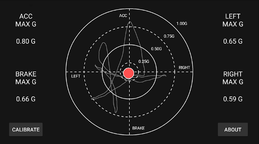Un accelerometro grafico
In commercio si trovano diversi display OLED monocromatici di piccolo formato facilmente interfacciabili con Arduino. Ne ho acquistato uno di 0,96 pollici di diagonale con una risoluzione di 128x64 pixel, compatibile con il display SSD1603 prodotto da Adafruit, per poco più di 5 Euro su Amazon:
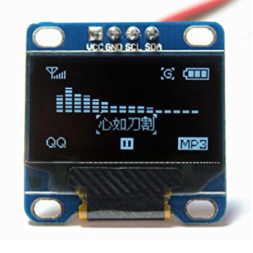Il display OLED acquistato
Oltre al costo irrisorio, il display ha il vantaggio di poter essere pilotato tramite il bus I2C di Arduino sfruttando le librerie sviluppate per il display originale.
La connessione al bus I2C richiede solamente i connettori per i canali SCL e SDA, linee di alimentazione escluse. Il display può essere collegato in cascata all'accelerometro:
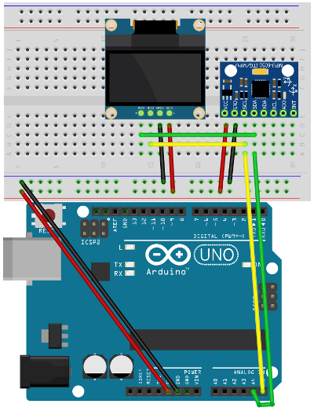Connessione del display al bus I2C del circuito dell'accelerometro
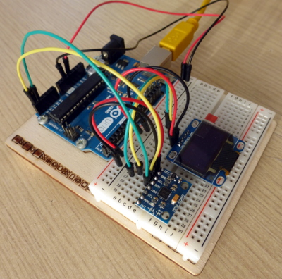Realizzazione pratica del circuito
Per verificare la corretta cablatura del circuito conviene effettuare uno scan del bus I2C (cfr. appunti accelerometro con arduino); se tutto funziona correttamente, lo scanner dovrebbe individuare due dispositivi distinti, l'accelerometro e il display:
Scanning IC2 bus... IC2 device found at address 0x3C IC2 device found at address 0x68 Scanning completed, waiting for another run...
Il dispositivo di indirizzo 0x68 è l'accelerometro, l'altro – 0x3C – è il display.
Esistono diverse librerie per il controllo del display; quelle di interesse sono:
Le librerie possono essere installate direttamente dall'IDE di Arduino:
Al termine della procedura, come controprova dell'avvenuta installazione si può utilizzare lo sketch che dimostra le possibilità del display. Dal menu → → selezionare lo sketch , avendo cura di impostare l'indirizzo corretto del display sostituendo alla riga 61 l'indirizzo preimpostato 0x3D con 0x3C:
[file ssd1306_128x64_i2c.ino]
...
void setup() {
Serial.begin(9600);
// by default, we'll generate the high voltage from the 3.3v line internally!
display.begin(SSD1306_SWITCHCAPVCC, 0x3D0x3C); // initialize with the I2C...
// init done
// Show image buffer on the display hardware.
// Since the buffer is intialized with an Adafruit splashscreen
// internally, this will display the splashscreen.
display.display();
delay(2000);
...
}
Avviata la compilazione, ho ottenuto il seguente errore:
Height incorrect, please fix Adafruit_SSD1306.h!
Il problema nasce dal fatto che la libreria Adafruit SSD1306 è predisposta per pilotare un display con una risoluzione di 128x32 pixel, mentre quello in uso ha un'altezza doppia. Per indicare alla libreria l'effettiva risoluzione del display è necessario modificare una dichiarazione all'interno del file Adafruit_SSD1306.h che si trova nella cartella Arduino/libraries/Adafruit_SSD1306 all'interno della cartella home dell'utente corrente. L'intervento va effettuato alla riga 73:
// #define SSD1306_128_64 #define SSD1306_128_32 // #define SSD1306_96_16
Il codice originale della libreria
#define SSD1306_128_64 // #define SSD1306_128_32 // #define SSD1306_96_16
Il codice modificato con la risoluzione corretta selezionata
Il codice ora compila e una volta trasferito sulla scheda Arduino permette di apprezzare le caratteristiche grafiche del display a disposizione.
Lo sviluppo dello sketch per il display OLED inizia da quello per display LCD, dopo aver eliminato il codice relativo al display LCD e all'acquisizione dell'accelerazione sull'asse z, in questo caso superflua:
#include <LiquidCrystal.h>#include <Wire.h> const int8_t MPU_I2C_ADDR = 0x68; // address of the MPU-6050 device const int8_t XG_OFFS_USRH = 0x06; // Accelerometer Offset Cancellation const int8_t ACCEL_CONFIG = 0x1C; // Accelerometer Configuration const int8_t ACCEL_XOUT_H = 0x3B; // Accelerometer Measurements const int8_t PWR_MGMT_1 = 0x6B; // Power Management 1 register address // accelerometer full scale modes const int8_t AFS_SEL_2G = 0x00; const int8_t AFS_SEL_4G = 0x08; const int8_t AFS_SEL_8G = 0x10; const int8_t AFS_SEL_16G = 0x18;float to_g_force;// declare the LCD wiring schema usedLiquidCrystal lcd(12, 11, 5, 4, 3, 2);const int display_refresh_rate_ms = 500; // update the display every 500ms unsigned long last_display_refresh_time = 0; // last time the display was updated// define the masks for the two rowsstatic char* upper_row = "X: Y: ";static char* lower_row = "Z: A: ";// data acquisition rate const unsigned long scan_rate_ms = 10; // sample at 100Hz // data buffers const int buffer_length = 100;floatint16_t accel_x_buffer[buffer_length];floatint16_t accel_y_buffer[buffer_length];float accel_z_buffer[buffer_length];float accel_a_buffer[buffer_length]; int next_scan_index = 0; // where the next sample will be savedvoid sprintf_accel(char* buffer, int pos, float value) { // convert the floating point value in cents int cents = static_cast<int>(value * 100); // print the sign if (cents >= 0) buffer[pos++] = '+'; else buffer[pos++] = '-'; // print the value, or 9.99 if it is too big cents = min(999, labs(cents)); buffer[pos++] = '0' + cents / 100 % 10; // units buffer[pos++] = '.'; // decimal separator buffer[pos++] = '0' + cents / 10 % 10; // tenths buffer[pos++] = '0' + cents % 10; // cents }void setup() { // initialize the Wire library Wire.begin(); // wake up the mpu-6050 unit Wire.beginTransmission(MPU_I2C_ADDR); Wire.write(PWR_MGMT_1); Wire.write(0); Wire.endTransmission(); // select the accelerometer full scale int8_t afs_sel = AFS_SEL_2G; // set the accelerometer full scale Wire.beginTransmission(MPU_I2C_ADDR); Wire.write(ACCEL_CONFIG); Wire.write(afs_sel); Wire.endTransmission();// set the acceleration conversion factor to_g_force = 1. / (16384 >> (afs_sel >> 3 & 0x03));// calibrate the accelerometer const int16_t offset_x = -2574; const int16_t offset_y = 336; const int16_t offset_z = 1755; Wire.beginTransmission(MPU_I2C_ADDR); Wire.write(XG_OFFS_USRH); uint8_t offsets[6]; offsets[0] = static_cast<uint8_t>(offset_x >> 8); offsets[1] = static_cast<uint8_t>(offset_x & 0x00ff); offsets[2] = static_cast<uint8_t>(offset_y >> 8); offsets[3] = static_cast<uint8_t>(offset_y & 0x00ff); offsets[4] = static_cast<uint8_t>(offset_z >> 8); offsets[5] = static_cast<uint8_t>(offset_z & 0x00ff); Wire.write(offsets, 6); Wire.endTransmission();// initialize the LCD display lcd.begin(16, 2);// print the first row template lcd.setCursor(0, 0); lcd.print(upper_row);// print the second row template lcd.setCursor(0, 1); lcd.print(lower_row);} void loop() { unsigned long loop_start = millis(); // point to the first accelerometer register Wire.beginTransmission(MPU_I2C_ADDR); Wire.write(ACCEL_XOUT_H); Wire.endTransmission(); // readsixfour bytes of data Wire.requestFrom(MPU_I2C_ADDR,64); // the most significant byte is transmitted first! int16_t accel_x = Wire.read() << 8 | Wire.read(); int16_t accel_y = Wire.read() << 8 | Wire.read(); int16_t accel_z = Wire.read() << 8 | Wire.read();// convert the accelerometer readings to g-force values float accel_x_g = accel_x * to_g_force; float accel_y_g = accel_y * to_g_force; float accel_z_g = accel_z * to_g_force;// calculate the total accelerationfloat accel_a_g = sqrt( accel_x_g * accel_x_g + accel_y_g * accel_y_g + accel_z_g * accel_z_g); float accel_a = sq(accel_x) + sq(accel_y); // save the acceleration data accel_x_buffer[next_scan_index] = accel_x_g; accel_y_buffer[next_scan_index] = accel_y_g;accel_z_buffer[next_scan_index] = accel_z_g;accel_a_buffer[next_scan_index] = accel_a_g; // find the position for the next scan next_scan_index = (next_scan_index + 1) % buffer_length; // time to update the display? if (millis() - last_display_refresh_time > display_refresh_rate_ms) { // time to update the display last_display_refresh_time = millis(); // find the maximum acceleration index int max_scan_index = 0; for (int i = 1; i < buffer_length; i++) if (accel_a_buffer[i] > accel_a_buffer[max_scan_index]) max_scan_index = i;// print the acceleration values into the row templates sprintf_accel(upper_row, 2, accel_x_buffer[max_scan_index]); sprintf_accel(upper_row, 11, accel_y_buffer[max_scan_index]); sprintf_accel(lower_row, 2, accel_z_buffer[max_scan_index]); sprintf_accel(lower_row, 11, accel_a_buffer[max_scan_index]);// update the display lcd.setCursor(0, 0); lcd.print(upper_row); lcd.setCursor(0, 1); lcd.print(lower_row);} // wait for the acquisition period to expire unsigned long elapsed = millis() - loop_start; if (elapsed < scan_rate_ms) delay(scan_rate_ms - elapsed); }
Oltre a quanto anticipato, considerato che non è richiesta la visualizzazione dei valori di accelerazione espressi in frazioni di g, si è optato per lavorare con i dati grezzi acquisiti dal sensore, in modo da evitare inutili operazioni in virgola mobile che sono particolarmente onerose per il microcontrollore montato sulla scheda Arduino — fino a 10 volte più lente rispetto alle operazioni sui numeri interi[4][5][6][8]. La variabile accel_a (che contiene ora il quadrato del valore di accelerazione totale) rimane float per evitare condizioni di overflow, quando cioè il dato grezzo è così elevato che il suo quadrato non è rappresentabile con soli 16 bit.
Perché non si calcola il valore effettivo di accelerazione ma “solo” il suo quadrato? Poiché questo valore viene usato solo per determinare il campione massimo, calcolarne la radice quadrata sarebbe un inutile spreco di tempo: il massimo dei quadrati è anche il massimo dei valori sotto radice.
Lo sketch ora acquisisce i dati, ma non li visualizza. Considerando che la risoluzione del display è di 128x64 pixel, conviene mostrare il diagramma cartesiano in prospettiva, in forma di ovale:
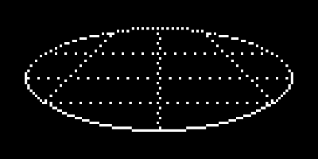Il piano grafico visto in prospettiva
La griglia vuole essere un omaggio a Elite, cui giocavo negli anni '80:
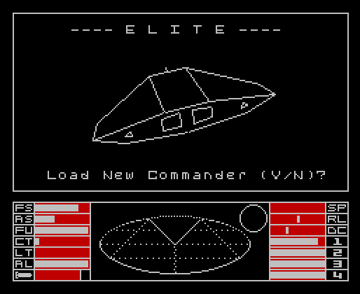La schermata iniziale di Elite sullo ZX Spectrum
I valori di accelerazione lungo gli assi x e y saranno rappresentati da un punto fluttuante sulla superficie del grafico. Considerando il posizionamento dei due sensori ed i sistemi di riferimento da essi adottati, l'asse x dell'accelerometro corrisponde alle ordinate del display, mentre l'asse y dell'accelerometro a quello delle ascisse:
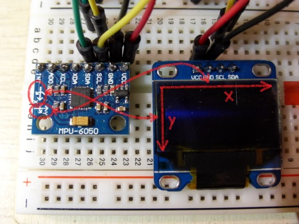Corrispondenza tra i sistemi di riferimento sensore/display
Definita la modalità di visualizzazione, si dichiara e inizializza il display:
#include <SPI.h> #include <Wire.h> #include <Adafruit_GFX.h> #include <Adafruit_SSD1306.h> ... // declare the OLED display used #define OLED_RESET 4 Adafruit_SSD1306 display(OLED_RESET); const int display_refresh_rate_ms =500100; // update the display every500100ms unsigned long last_display_refresh_time = 0; // last time the display was updated ... // data acquisition rate const unsigned long scan_rate_ms =105; // sample at100200Hz // data buffers const int buffer_length =10020; ... void setup() { ... // initialize the display display.begin(SSD1306_SWITCHCAPVCC, 0x3C); // hide the Adafruit welcome screen display.clearDisplay(); display.display(); }
L'uso delle librerie grafiche richiede un discreto quantitativo di memoria, tant'è che se si lascia a 100 la dimensione del buffer dove vengono temporaneamente conservati i dati grezzi ottenuti dal sensore la compilazione dello sketch fallisce con errore «not enough memory». Conviene perciò diminuire a 20 il numero di campioni memorizzati. Considerando d'altra parte che i tempi di risposta del display OLED sono molto più rapidi di un LCD, si può aumentare la frequenza di campionamento a 200Hz. I 20 campioni acquisiti a 200Hz coprono un intervallo di tempo di 100ms, e questa sarà la durata del ciclo di aggiornamento del display: in questo modo il display verrà aggiornato al completo ricaricamento del buffer.
Per semplicità, il ciclo di aggiornamento del display consiste in una cancellazione, seguita dal caricamento dell'immagine della griglia e dal disegno del cursore nella posizione corrispondente ai valori di accelerazione. Ripristinare solo la parte di griglia al di sotto del cursore potrebbe risultare più efficiente rispetto al ridisegno dell'intero schermo ma, consideratane la complessità, l'aggiornamento mirato del display verrà implementato solo se necessario:
void loop() {
...
// time to update the display?
if (millis() - last_display_refresh_time > display_refresh_rate_ms) {
// time to update the display
last_display_refresh_time = millis();
// find the maximum acceleration index
int max_scan_index = 0;
for (int i = 1; i < buffer_length; i++)
if (accel_a_buffer[i] > accel_a_buffer[max_scan_index])
max_scan_index = i;
// clear the drawing area
display.clearDisplay();
// load the grid image
display.drawBitmap(
(display.width() - grid_width ) / 2, // x
(display.height() - grid_height) / 2, // y
grid_bitmap,
grid_width,
grid_height,
WHITE);
// plot the cursor
display.fillCircle(
display.width() / 2 - (accel_y_buffer[max_scan_index] >> 9),
display.height() / 2 - (accel_x_buffer[max_scan_index] >> 10),
cursor_radius,
WHITE);
// refresh the display
display.display();
}
// wait for the acquisition period to expire
unsigned long elapsed = millis() - loop_start;
if (elapsed < scan_rate_ms)
delay(scan_rate_ms - elapsed);
}
Si può notare che l'immagine della griglia viene centrata sul display. La definizione della bitmap monocromatica della griglia consiste di 42 righe di 14 byte ciascuna (14 × 8 = 112 colonne), ed è la seguente:
// the grid
static const int grid_width = 112;
static const int grid_height = 42;
static const unsigned char PROGMEM grid_bitmap[] = {
B00000000, B00000000, B00000000, B00000000, B00000000, B00000101, B01010101,
B01010101, B01010000, B00000000, B00000000, B00000000, B00000000, B00000000,
B00000000, B00000000, B00000000, B00000000, B00000001, B01010000, B00000000,
B00000000, B00000101, B01000000, B00000000, B00000000, B00000000, B00000000,
B00000000, B00000000, B00000000, B00000000, B01011100, B00000000, B00000001,
B00000000, B00000000, B00011010, B00000000, B00000000, B00000000, B00000000,
B00000000, B00000000, B00000000, B00001111, B00001000, B00000000, B00000000,
B00000000, B00000000, B00010000, B11110000, B00000000, B00000000, B00000000,
B00000000, B00000000, B00000000, B11100000, B00000000, B00000000, B00000000,
B10000000, B00000000, B00000000, B00000111, B00000000, B00000000, B00000000,
B00000000, B00000000, B00000110, B00000000, B00100000, B00000000, B00000000,
B00000000, B00000000, B00000100, B00000000, B01100000, B00000000, B00000000,
B00000000, B00000000, B00110000, B00000000, B00000000, B00000000, B00000001,
B00000000, B00000000, B00000000, B00000000, B00001100, B00000000, B00000000,
B00000000, B00000000, B10000000, B00000000, B10000000, B00000000, B00000000,
B00000000, B00000000, B00000001, B00000000, B00000001, B00000000, B00000000,
B00000000, B00000010, B00000000, B00000000, B00000000, B00000000, B00000000,
B10000000, B00000000, B00000000, B00000000, B00000000, B01000000, B00000000,
B00000000, B00001000, B00000000, B00000010, B00000000, B00000000, B00000000,
B00000000, B00000000, B00000000, B01000000, B00000000, B00010000, B00000000,
B00000000, B00100010, B00100010, B00100000, B01000100, B01000100, B01000101,
B00100010, B00100010, B00100010, B00000100, B01000100, B01000100, B00000000,
B00000000, B10000000, B00000000, B00001000, B00000000, B00000000, B00000000,
B00000000, B00000000, B00000000, B00010000, B00000000, B00000001, B00000000,
B00000000, B00000000, B00000000, B00000000, B00000000, B00000000, B00000000,
B10000000, B00000000, B00000000, B00000000, B00000000, B00000000, B00000000,
B00000010, B00000000, B00000000, B00100000, B00000000, B00000000, B00000000,
B00000000, B00000000, B00000000, B00000100, B00000000, B00000000, B01000000,
B00000000, B00000000, B00000000, B00000000, B00000000, B00000000, B00000001,
B00000000, B00000000, B00000000, B00000000, B00000000, B00000000, B00000000,
B00001000, B00000000, B00000000, B10000000, B00000000, B00000000, B00000000,
B00000000, B00000000, B00000000, B00000001, B00000000, B00000000, B00010000,
B00000000, B00000000, B00000000, B00000000, B00000000, B00000000, B00000000,
B10000000, B00000000, B00000000, B00000000, B00000000, B00000000, B00000000,
B00010000, B00000000, B00000010, B00000000, B00000000, B00000000, B00000000,
B00000000, B00000000, B00000000, B00000000, B01000000, B00000000, B00001000,
B00100000, B00000000, B00000000, B00000000, B00000000, B00000000, B00000001,
B00000000, B00000000, B00000000, B00000000, B00000000, B00000000, B00000100,
B00100000, B00000000, B00001000, B00000000, B00000000, B00000000, B00000000,
B00000000, B00000000, B00000000, B00000000, B00010000, B00000000, B00000100,
B00110001, B00010001, B00000001, B00010001, B00010001, B00010001, B00010000,
B10001000, B10001000, B10001000, B10001000, B10000001, B00010001, B00010100,
B00100000, B00000000, B00100000, B00000000, B00000000, B00000000, B00000000,
B00000000, B00000000, B00000000, B00000000, B00000100, B00000000, B00000100,
B00100000, B00000000, B00000000, B00000000, B00000000, B00000000, B00000001,
B00000000, B00000000, B00000000, B00000000, B00000000, B00000000, B00000100,
B00010000, B00000000, B10000000, B00000000, B00000000, B00000000, B00000000,
B00000000, B00000000, B00000000, B00000000, B00000001, B00000000, B00001000,
B00010000, B00000000, B00000000, B00000000, B00000000, B00000000, B00000000,
B10000000, B00000000, B00000000, B00000000, B00000000, B00000000, B00001000,
B00001000, B00000010, B00000000, B00000000, B00000000, B00000000, B00000000,
B00000000, B00000000, B00000000, B00000000, B00000000, B01000000, B00010000,
B00000100, B00000000, B00000000, B00000000, B00000000, B00000000, B00000001,
B00000000, B00000000, B00000000, B00000000, B00000000, B00000000, B00100000,
B00000010, B00001000, B00000000, B00000000, B00000000, B00000000, B00000000,
B00000000, B00000000, B00000000, B00000000, B00000000, B00010000, B01000000,
B00000001, B00000000, B00000000, B00000000, B00000000, B00000000, B00000000,
B10000000, B00000000, B00000000, B00000000, B00000000, B00000000, B10000000,
B00000000, B10100000, B00000000, B00000000, B00000000, B00000000, B00000000,
B00000000, B00000000, B00000000, B00000000, B00000000, B00000101, B00000000,
B00000000, B01101000, B10001000, B10001000, B10001000, B10001000, B10001001,
B00010001, B00010001, B00010001, B00010001, B00010001, B00010110, B00000000,
B00000000, B00001000, B00000000, B00000000, B00000000, B00000000, B00000000,
B00000000, B00000000, B00000000, B00000000, B00000000, B00011000, B00000000,
B00000000, B00000110, B00000000, B00000000, B00000000, B00000000, B00000000,
B10000000, B00000000, B00000000, B00000000, B00000000, B01100000, B00000000,
B00000000, B00000001, B10000000, B00000000, B00000000, B00000000, B00000000,
B00000000, B00000000, B00000000, B00000000, B00000001, B10000000, B00000000,
B00000000, B00000000, B01100000, B00000000, B00000000, B00000000, B00000001,
B00000000, B00000000, B00000000, B00000000, B00000110, B00000000, B00000000,
B00000000, B00000000, B00011100, B00000000, B00000000, B00000000, B00000000,
B00000000, B00000000, B00000000, B00000000, B00111000, B00000000, B00000000,
B00000000, B00000000, B00000011, B10000000, B00000000, B00000000, B00000000,
B10000000, B00000000, B00000000, B00000001, B11000000, B00000000, B00000000,
B00000000, B00000000, B00000000, B01110000, B00000000, B00000000, B00000000,
B00000000, B00000000, B00000000, B00001110, B00000000, B00000000, B00000000,
B00000000, B00000000, B00000000, B00001111, B00000000, B00000000, B00000001,
B00000000, B00000000, B00000000, B11110000, B00000000, B00000000, B00000000,
B00000000, B00000000, B00000000, B00000000, B11111000, B00000000, B00000000,
B00000000, B00000000, B00011111, B00000000, B00000000, B00000000, B00000000,
B00000000, B00000000, B00000000, B00000000, B00000111, B11111000, B00000000,
B10000000, B00011111, B11100000, B00000000, B00000000, B00000000, B00000000,
B00000000, B00000000, B00000000, B00000000, B00000000, B00000111, B11111111,
B11111111, B11100000, B00000000, B00000000, B00000000, B00000000, B00000000,
};
Il cursore è rappresentato da un cerchio pieno, di raggio prefissato:
// the cursor static const int cursor_radius = 4; // the grid static const int grid_width = 112; static const int grid_height = 42; ...
La posizione del cursore è determinata con un metodo piuttosto efficiente, anche se impreciso (comunque accettabile per questo tipo di implementazione). La prima considerazione è che i valori di accelerazione acquisiti dal sensore sono interi a 16 bit con segno. La seconda è che per le accelerazioni trasversali (asse y dell'accelerometro, corrispondente alle ascisse del display), le coordinate assunte dal cursore vanno da 0 a 127, mentre per quelle longitudinali (asse x dell'accelerometro, corrispondente alle ordinate del display) vanno da 0 a 63. Per mappare un valore a 16 bit con segno nell'intervallo [0..127] è sufficiente ridurlo nell'intervallo [-64..+63] con una semplice operazione di shift di 9 posizioni, e aggiungere 64 al risultato. Idem per la mappatura sull'intervallo [0..63], con l'accortezza di effettuare uno shift del dato grezzo di 10 posizioni per ridurlo nell'intervallo [-32..+31], e sommare 32 al risultato ottenuto.
Notare che su entrambe le coordinate è stato effettuato un cambiamento di segno, in modo che il movimento del cursore sul diagramma rispecchi le accelerazioni effettivamente misurate dal sensore.
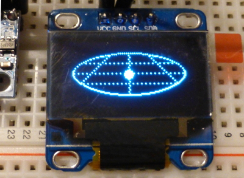Il display OLED in funzione
La versione dello sketch fin qui ottenuta è scaricabile qui.
Poiché il sensore può funzionare con quattro sensibilità differenti, si può estendere il circuito e il firmware per consentire all'utente di selezionare il fondo scala che preferisce?
Per impratichirmi con l'uso delle interrupt, ho deciso di comandare il fondo scala con un'interruzione: la pressione di un pulsante genera un'interrupt che si occupa di configurare il sensore sul fondo scala successivo, secondo il ciclo ±2g → ±4g → ±8g → ±16g → ±2g …
Sfruttando la possibilità che offre la scheda Arduino di generare un'interruzione in corrispondenza di un cambiamento del livello elettrico presente sul pin 3, il circuito si arricchisce di un pulsante che collega il suddetto pin a massa:
Il pulsante per il cambio scala
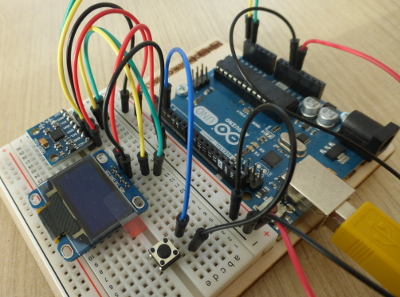Dettaglio del pulsante di cambio scala
A livello software c'è da tener conto di una particolarità della piattaforma Arduino: durante il servizio di un'interruzione non è possibile utilizzare la libreria Wire perché lei stessa ne fa uso[7][9]. Nella routine di gestione dell'interruzione non si può quindi inviare il comando di cambio fondo scala al sensore, ma si può richiedere al programma principale di farlo quanto prima. A tal scopo si usano due variabili, afs_sel che indica il fondo scala corrente e new_afs_sel che indica invece il fondo scala desiderato: se i due valori sono diversi, il programma principale invia il comando di cambio fondo scala. La routine di gestione dell'interrupt si limita quindi ad aggiornare il valore della variabile new_afs_sel, lasciando che sia il programma principale ad inoltrare la richiesta al sensore.
Lo sketch va esteso per supportare la nuova funzionalità, che prevede anche la visualizzazione del fondo scala corrente nell'angolo in basso a sinistra del display:
...
// accelerometer full scale modes
const int8_t AFS_SEL_2G = 0x00;
const int8_t AFS_SEL_4G = 0x08;
const int8_t AFS_SEL_8G = 0x10;
const int8_t AFS_SEL_16G = 0x18;
volatile int8_t afs_sel;
volatile int8_t new_afs_sel;
...
// interrupt handler
void changeScale() {
if (afs_sel == AFS_SEL_2G)
new_afs_sel = AFS_SEL_4G;
else if (afs_sel == AFS_SEL_4G)
new_afs_sel = AFS_SEL_8G;
else if (afs_sel == AFS_SEL_8G)
new_afs_sel = AFS_SEL_16G;
else if (afs_sel == AFS_SEL_16G)
new_afs_sel = AFS_SEL_2G;
}
void setup() {
// initialize the Wire library
Wire.begin();
// wake up the mpu-6050 unit
Wire.beginTransmission(MPU_I2C_ADDR);
Wire.write(PWR_MGMT_1);
Wire.write(0);
Wire.endTransmission();
// select the accelerometer full scale
int8_t afs_sel = AFS_SEL_2G;
new_afs_sel = afs_sel;
...
// hide the Adafruit welcome screen
display.clearDisplay();
display.display();
// attach the interrupt handler
const byte changeScalePin = 3;
pinMode(changeScalePin, INPUT_PULLUP);
attachInterrupt(digitalPinToInterrupt(changeScalePin), changeScale, FALLING);
}
void loop() {
unsigned long loop_start = millis();
// change the accelerometer scale if requested
if (new_afs_sel != afs_sel) {
afs_sel = new_afs_sel;
// set the accelerometer full scale
Wire.beginTransmission(MPU_I2C_ADDR);
Wire.write(ACCEL_CONFIG);
Wire.write(afs_sel);
Wire.endTransmission();
}
...
// time to update the display?
if (millis() - last_display_refresh_time > display_refresh_rate_ms) {
...
// load the grid image
display.drawBitmap(
(display.width() - grid_width ) / 2, // x
(display.height() - grid_height) / 2, // y
grid_bitmap,
grid_width,
grid_height,
WHITE);
// print the current accelerometer scale
display.setCursor(0, display.height() - 8);
display.setTextColor(WHITE);
display.print("FS=");
display.print(2 << ((afs_sel >> 3) & 0x03));
display.print("g");
// plot the cursor
display.fillCircle(
display.width() / 2 - (accel_y_buffer[max_scan_index] >> 9),
display.height() / 2 - (accel_x_buffer[max_scan_index] >> 10),
cursor_radius,
WHITE);
}
...
}
Da notare la manipolazione binaria della variabile afs_sel per passare dalle costanti AFS_SEL_*G all'effettivo valore del fondo scala 2, 4, 8 o 16.
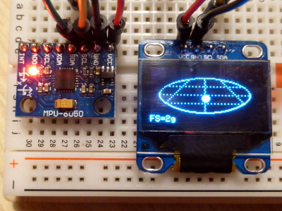Il display OLED con l'indicazione del fondo scala
La versione dello sketch con la gestione del fondo scala è scaricabile qui.
Segue un elenco non esaustivo di possibili sviluppi del progetto:
Aggiornamento [06/01/2016]
Avendo messo alla prova l'accelerometro durante alcuni brevi viaggi in auto, ho potuto constatare che la scala ±2g ha una sensibilità troppo limitata per le accelerazioni che si sperimentano su un'auto convenzionale: il cursore rimane sempre nei pressi del centro del grafico. Ho pensato quindi di modificare lo sketch introducendo la scala fittizia ±1g impostando l'accelerometro sulla scala minima ±2g e riducendo di un fattore 2 la rimappatura dei valori di accelerazione. A tal scopo è stata introdotta una variabile booleana che indica se ci si trova nella scala ±1g o ±2g:
volatile int8_t afs_sel;
volatile int8_t new_afs_sel;
volatile bool emulate_1g_afs;
...
void setup() {
...
// select the accelerometer full scale
afs_sel = AFS_SEL_2G;
new_afs_sel = afs_sel;
// start with the fake 1g scale
emulate_1g_afs = true;
...
}
Nella routine di cambio scala bisogna ora tener conto della nuova sensibilità:
// interrupt handler
void changeScale() {
if (afs_sel == AFS_SEL_2G) {
if (emulate_1g_afs == true)
emulate_1g_afs = false; // switch from fake 1g to actual 2g scale
else
new_afs_sel = AFS_SEL_4G;
}
else if (afs_sel == AFS_SEL_4G)
new_afs_sel = AFS_SEL_8G;
else if (afs_sel == AFS_SEL_8G)
new_afs_sel = AFS_SEL_16G;
else if (afs_sel == AFS_SEL_16G) {
new_afs_sel = AFS_SEL_2G;
emulate_1g_afs = true; // back to fake 1g scale
}
}
La tabella sottostante riporta la mappatura tra la scala selezionata dall'utente, i valori assunti delle variabili afs_sel e emulate_1g_afs e l'entità dello shift applicato ai valori di accelerazione sui due assi del display:
| scala | afs_sel | emulate_1g_afs | shift x | shift y |
|---|---|---|---|---|
| ±1g | AFS_SEL_2G | true | 8 | 9 |
| ±2g | AFS_SEL_2G | false | 9 | 10 |
| ±4g | AFS_SEL_4G | false | 9 | 10 |
| ±8g | AFS_SEL_8G | false | 9 | 10 |
| ±16g | AFS_SEL_16G | false | 9 | 10 |
Resta solo da visualizzare la nuova scala ed applicare lo shift corretto:
void loop() {
...
// time to update the display?
if (millis() - last_display_refresh_time > display_refresh_rate_ms) {
...
// print the current accelerometer scale
display.setCursor(0, display.height() - 8);
display.setTextColor(WHITE);
display.print("FS=");
if (emulate_1g_afs)
display.print(1);
else
display.print(2 << ((afs_sel >> 3) & 0x03));
display.print("g");
// plot the cursor
display.fillCircle(
display.width() / 2
64 - (accel_y_buffer[max_scan_index] >> (emulate_1g_afs ? 8 : 9)),
display.height() / 2
32 - (accel_x_buffer[max_scan_index] >> (emulate_1g_afs ? 9 : 10)),
cursor_radius,
WHITE);
// refresh the display
display.display();
}
...
}
La versione dello sketch con la scala fittizia ±1g è scaricabile da qui.
Con l'aumento della sensibilità, diventa più evidente l'approssimazione introdotta nella mappatura dei valori di accelerazione sul grafico:
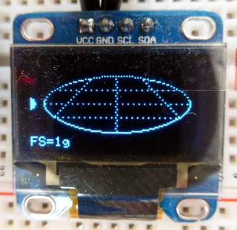Posizione del cursore a fronte di un'accelerazione trasversale di 1g
Come già detto, l'errore è dovuto al fatto che la scala dei valori di accelerazione trasversale viene mappata sulla larghezza del display (128 pixel) sebbene l'asse maggiore dell'ellisse sia lungo solo 108 pixel; stesso discorso per le accelerazioni longitudinali, i cui valori sono mappati sull'intera altezza del display (64 pixel) quando in realtà l'asse minore dell'ellisse ne misura solo 42.
Si può aumentare l'accuratezza della mappatura senza ricorrere all'uso della matematica in virgola mobile con un semplice stratagemma. Consideriamo ad esempio il semiasse positivo delle ascisse, sul quale vengono mappati i valori di accelerazione trasversale destra:
accel_y → x ∈ [0, 64)
Questi valori dovrebbero in realtà essere mappati sulla lunghezza del semiasse orizzontale dell'ellisse:
accel_y → x ∈ [0, 56)
Dunque le coordinate x andrebbero normalizzate di un fattore:
x' = x · 56 / 64 = x · 0,875
La formula può essere così riscritta:
x' = x · 0,875 = x · (1 - 0,125) = x - x · 0,125 = x - x / 8
Essendo x intera, anche la divisione è tra numeri interi. Similmente si procede per le ordinate:
accel_x → y ∈ [0, 32) — mappatura attuale
accel_x → y ∈ [0, 21) — mappatura desiderata
y' = y · 21 / 32 = y · 0,65625
y' = y · 0,65625 = y · (1 - 0,34375) = y - y · 0,34375 ≅ y - y / 3
L'espressione intera in questo caso è un'approssimazione della mappatura ottimale, ma un'appossimazione nettamente migliore alla precedente. Il codice diventa:
void loop() {
...
// time to update the display?
if (millis() - last_display_refresh_time > display_refresh_rate_ms) {
...
// plot the cursor
int32_t x = accel_y_buffer[max_scan_index] >> (emulate_1g_afs ? 8 : 9);
int32_t y = accel_x_buffer[max_scan_index] >> (emulate_1g_afs ? 9 : 10);
display.fillCircle(
64 - (accel_y_buffer[max_scan_index] >> (emulate_1g_afs ? 8 : 9))(x - x / 8),
32 - (accel_x_buffer[max_scan_index] >> (emulate_1g_afs ? 9 : 10))(y - y / 3),
cursor_radius,
WHITE);
...
}
}
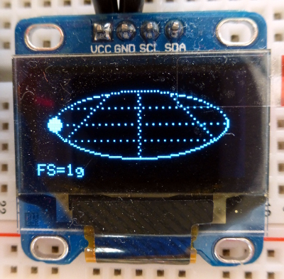
Posizione del cursore corretta
La versione finale dello sketch è disponibile qui.
Pagina modificata il 01/01/2017